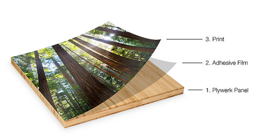

These sure would be fun to plan outfits around!
Stockings!
November 9, 2011 by
I am determined to complete, by the end of this month, stockings for everyone in the family so that when Christmas decorations come out, everyone in the family has a stocking. I’m not a master on the sewing machine but I can do some basics. So my plan is to do the stocking itself out of felt. I am going to do names out of material and iron them on via this tutorial on Sir Bubbadoo. And then I saw in my Sundance catalog, this stocking that has a pocket for your letter to Santa! So I think it’s all coming together in my mind. I’ll post an update of the completed stockings if they don’t look like total ass.
In other news, did you know that you can get a personalized letter back from Santa after you send yours off? Thanks to Danielle, now I do!
photo courtesy of sundancecatalog.com
Colorful Bands
November 8, 2011 by

I’m on the hunt for a colorful, sleek, modern ring to wear on my right hand. I had initially thought I wanted some kind of diamond-ish type of thing, but now I’m having second thoughts. I think that I wear so much turquoise all the time, that one of these babies might work instead.
1. Blue-Green Palette Ring
2. Global Village Band Ring
3. Red Jade Ring
4. Turquoise Windowpane Ring
Fabulous Footwear Friday
October 21, 2011 by
It’s getting cooler here you guys! I’m PUMPED! I’m ready to switch from flip-flops to boots! I did actually pass someone at the nail salon the other day who was wearing boots while I was wearing my flip-flops and I had to laugh. I mean I just can’t do the boots right now, if I’m going to sweat my ass off wearing them, can’t do it. Sorry. What I CAN do is PREPARE! These boots are on sale! And cute! And if they aren’t in style next winter I won’t have felt bad about spending an arm and a leg on them!
Women’s Riley Tall Slouch Boot, Payless
Hump Day Happy Hour: Beer Can Shandies
October 19, 2011 by
I’m not much of a beer drinker but when I saw this recipe in People magazine Country Special (I know, I know, shut it) I thought this actually looked like something I’d be up for. This is a Deen Brothers, of Paula Deen, recipe and I believe it can be found in their cookbook, Get Fired Up.
Beer Can Shandies
6 (12oz) cans of your favorite beer
1 (16oz) carton of lemonade
Open a can of lager and drink four sips. Top remaining beer with lemonade. Swirl to combine, adding more lemonade as desired.
New Hair Stuff
October 18, 2011 by

Hey y’all! Sorry for the lack of posting! It’s been a bit nutty around here, hopefully we can get back into a groove here. I thought I’d share some new hair stuff I just recently tried. Just to give you an idea…I have the thickest hair known to man and live in a VERY humid area, so not only does it take me like 500 years to dry my hair straight, then I have to fight the frizz when I walk outside.
KMS California Free Shape-So I’ve used this twice now and I’m pretty sure it reduced my drying time considerably, but I did have a certain 5 month old screaming off and on during the drying process, so I’ll keep you posted on this one.
Blow Weather Girl Climate Neutralizing Complex-This has definitely worked the two times I have used it. I have not had frizz problems as of late. However I’d love to try this in the summer when it’s super duper humid and hot to see how it does.
Have y’all tried anything lately that you think is the bomb? Care to share?
Plaid Mad
October 10, 2011 by

Plaid is definitely on my agenda for fall/winter. I’m seeing it everywhere and many times its in conjunction with ruffles (win!) or in a length that I can wear it with jeggings or leggings and my booty won’t be on display for all the world to see (win win!). Will you be wearing plaid in the near future and if so, what are you getting?
- Women’s Regular Long Sleeve Flannel Ruffle Popover Shirt, Landsend
- Lurex Plaid Ruffle Shirt, Express
- Plaid bayou tunic, J.Crew
- Longline Plaid Button Up w/Belt, Forever 21
- Urban Renewal Vintage Overdyed Plaid Flannel Boyfriend Shirt, Urban Outfitters
- Women’s Classic Flannel Shirts, Old Navy
Winner Winner Chicken Dinner!
October 3, 2011 by
The winner of the Night & Day Studios giveaway:
which means the winner is none other than Anna Minney! Anna can you contact me at ak[at]tipsysociety[dot]com so I can get you the info you need. Thanks!
And sorry you guys for being late with the winner announcement…we had a little guy turn 3 over the weekend, which in turn caused us to be putting together and putting stickers on lots of toys…and my house looks like a bomb went off, but we have lots of very cool things mom, very cool.
Thanks for being patient with me y’all!!
Plywerk Your Artwork
September 30, 2011 by
Have you heard about Plywerk? Basically Plywerk is designed to help you display artwork or photos in a super easy way. There are two ways to go about it, you either upload a photo and have them do it or you can order everything and do it yourself. It looks SUPER easy and I can think of SO MANY things to create this way! The first thought I had is obviously instagram pics, but then I started really thinking…I think it would be a great alternative to getting a photo on canvas that is so popular these days.
Here’s basically how it works:

And here’s just a sample of how it could look:
[caption id="attachment_9036" align="alignnone" width="500" caption="photo courtesy Amy Perl Photography via Plywerk Blog"][/caption]Cool huh? What would you do with it?
Iron Chef: BBBBQ Pork Tacos
September 29, 2011 by
Hi Again! I’m JWo, AK’s husband, posting this Iron Chef recipe from Cafe Beignet in New Orleans. I know right? Very meta. Also: your jealousy — I can feel it.
If this is your first Iron Chef post (it’s my second, so don’t feel too out of it), Danielle from elleinadspir created an idea that her husband would name an ingredient each week. Then, we cook with it! Last week was Balsamic Vinegar (my recipe, Danielle’s linkup). This week: BEER.
Now, my wife… she does not like the beer. She’s more a marg type of girl. So I had to sneak this secret ingredient in — how would someone do such a thing? By hiding the beer in a slow cooker OF COURSE. The best part? She loved these tacos, even after hearing it was beer’d.
I call this thing: BBBBQ Pork. the extra B is for beer. The other extra B is a typo
Ingredients
* 1 lb pork tenderloin (BBQ seasoning if you can find)
* 1 Onion
* 1 Shiner Bock (or other dark beer)
* 1 Can rotel (tomatoes and green chiles)
* 1 Can Pinto Beans
Method
* Slice onion, layer into slow cooker
* Add pork tenderloin on top of onions
* Add 2/3 of the beer. Reserve other 1/3 for another use
* pour rotel over tenderloin
* Heat on high for 4 hours (or low for all the day)
On to the Pics!
[caption id="attachment_9067" align="aligncenter" width="500" caption="The Before. Anticipation!"][/caption] [caption id="attachment_9069" align="aligncenter" width="500" caption="Tada!"][/caption]This BBBBQ Pork is available on We Eatt for Sharing.


{kind=link}
{kind=link}
Recent Comments